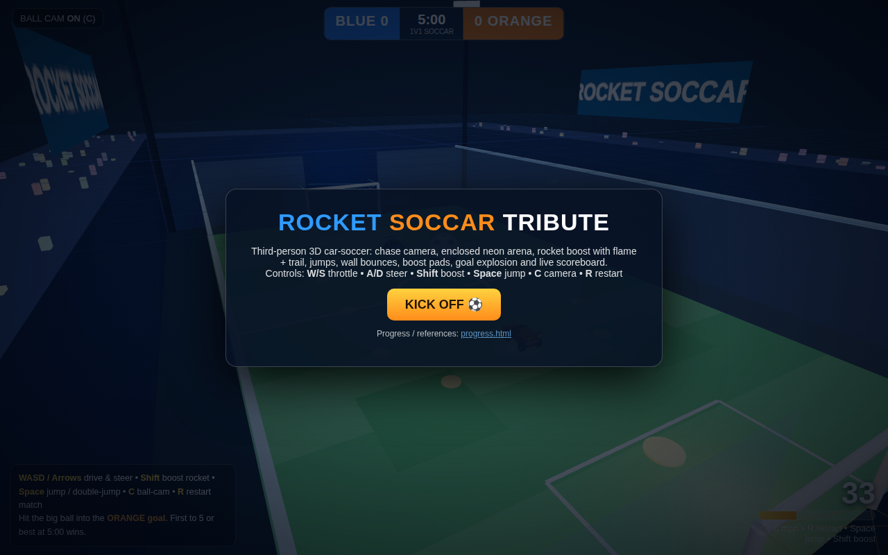
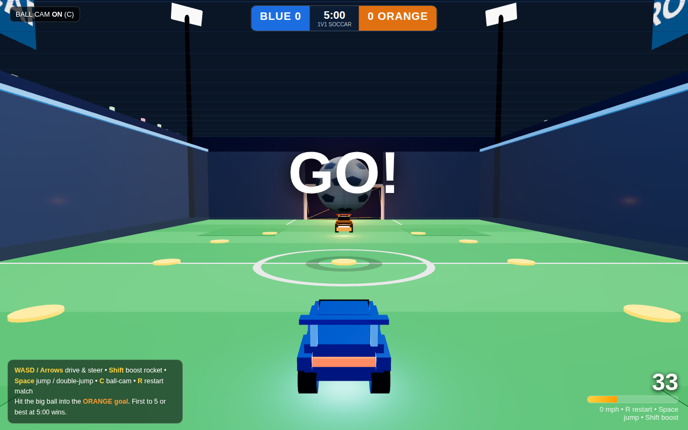
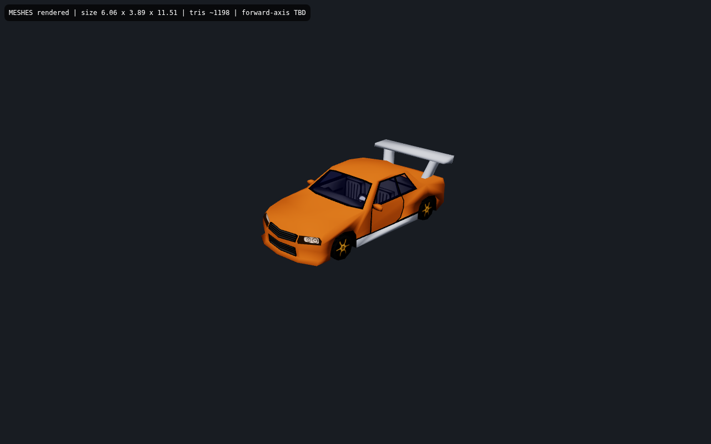
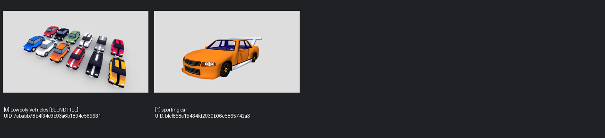

Playable build: index.html — Three.js perspective 3D, chase/ball-cam, boost, jump, AI opponent, goals, HUD, timer, restart.
Third-person behind-car chase framing, ball mid-field, both goals readable. RL keeps car low-center, ball in upper third.
Sources:
Official Season 13 Gameplay Trailer (youtube.com)
Fandom in-game screenshots index
Ball-cam ON by default; camera yaws to keep ball in view while car steers independently. Toggle C mirrors RL Triangle toggle.
Sources:
Ball Cam screenshot 1920×1080 (gamingcfg)
Ball Cam pointers discussion (gamefaqs)
Enclosed rectangle ~ DFH Stadium: green striped turf, white lines + centre circle, transparent hex walls, glowing trim, stands + floodlights + jumbotron, blue/orange goals.
Sources:
Season 17 Neo Tokyo / DFH arena overview (epicdope)
Arena-pref screenshots (fandom)
Octane-like wedge bodies (blue vs orange), dark cabin, spoiler, 4 wheels; oversized white/black patterned ball (~2× car height) with ground blob shadow.
Sources:
4K arena action wallpaper (wallpapermotion)
Overtime collision breakdown (deepdreamgenerator)
Rear cone flame + particle trail while boosting, supersonic trails, impact burst on car-ball contact, goal explosion confetti, boost-pad pickup flash.
Sources:
Boost meter + pads wiki (fandom)
Rocket League in 2024 gameplay compilation (SunlessKhan)
Top-center scoreboard BLUE score + timer + ORANGE score; bottom-right big boost number + bar; GOAL! banner centre; kickoff countdown; start menu + win/lose + rematch.
Sources:
Team-colored boost meter (epicgames help)
Screenshot/HUD staging guide (steamcommunity)
Season 11 gameplay trailer HUD views (youtube)
Menu over bright arena attract orbit:

Live gameplay (?autostart=1&demo=1): blue car chasing pentagon ball toward orange car/goal, boost flame, HUD:

Searched "low poly arcade race car" (downloadable, <6MB, <20k faces): 2 candidates. Tile [1] "sporting car" by laranjarodada, CC Attribution, 1198 tris, 108132 bytes, 24 meshes / 11 materials / 4 textures, KHR_materials_specular (valid) — downloaded to models/sportscar.glb with attribution sidecar. Verified rendering in Three.js 0.160 GLTFLoader via glb-check.html:

Contact sheet:

Decision: kept polished procedural cars (free blue/orange team tint, spinning/steering wheels, zero download risk) and folded GLB cues in — slanted glass, roof, wing spoiler + struts, headlight/taillight bars, fenders over tucked wheels, gold hubs. Skill viewer (prepare_viewer.py) failed on missing decoder assets, so the minimal loader page above is the engine proof.
1. No dodge-flip / aerial rotation / wall-drive — jump + double-jump only; RL aerials deeper. 2. Boxy procedural silhouette vs true Octane curves (fenders/hood/spoiler/glass added, still angular). 3. Crowd is static colored boxes; stadium lighting static except goal pulse. 4. No demolitions, no ball curve; single AI difficulty (ball-chase + demo autopilot for captures). 5. Night-arena grade vs RL daytime brightness (exposure/lights raised, walls at 0.24).
Dodge-flip impulse + air pitch control, then day-arena lighting preset toggle.
W/S throttle+reverse, A/D steer, Shift boost (drains 33/s, pads +25/+100), Space jump/double-jump, C ball-cam, R restart. Goal when ball fully enters mouth (orange end = Blue scores). First to 5 or timer 5:00 ends match with win/lose/draw + rematch. WebAudio: engine hum follows speed, boost noise, bounce/blip, countdown beeps, goal horn (starts on KICK OFF click). ?autostart=1 skips menu, ?demo=1 enables autopilot for captures. Verified: JS node --check OK; index.html + progress.html HTTP 200; real Chromium screenshots above (menu, GO!/gameplay, GLB proof).
Updated 2026-09-07 UTC · critic round 2 (fresh harsh): 11/11 functional PASS; fixes applied — brightness pass, pentagon ball texture, car detail (glass/roof/wing/lights/fenders/tucked spin+steer wheels), ball-cam elevation clamp, WebAudio, supersonic trail + FOV, goal light pulse, goal boxes, help fade, demo autopilot. Previous round-1 6-bug fix (kickoff yaw, mesh/physics mirror, AI steer, end-wall width, goal recess, countdown race) still holding.